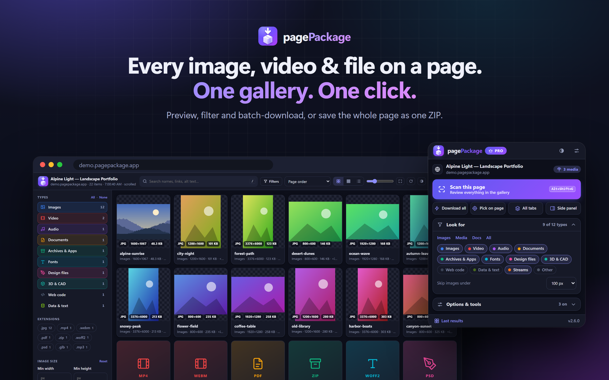
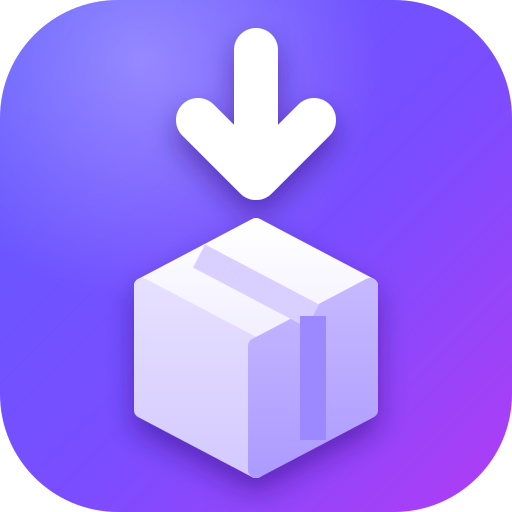

pagePackage
Every image, video & file on a page. One gallery. One click.
pagePackage is a Chrome extension that finds everything a page contains, shows it in a gallery you can filter and preview, and saves what you pick: one by one, all at once, converted, or as a single ZIP.
Runs100% in your browser